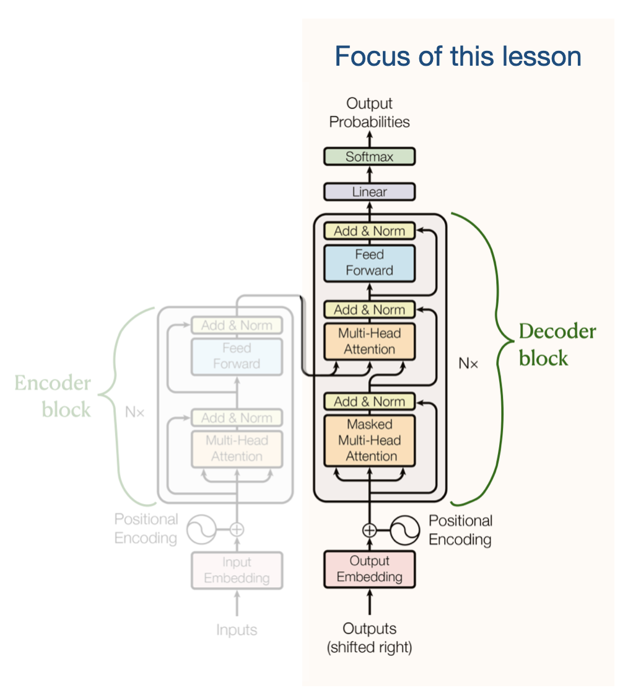

Transformer blocks
Objectives
Gain a basic understanding of Transformer technology and why it is important.
Explore transformer block and its main components
Limitations in traditional LM
RNN based traditional LM failed to track long-range dependencies like understanding how a word at the start of a paragraph relates to one at the end
RNN based models that processed words one by one (not scalable)
Ambiguity Resolution: Can’t differentiate specific linguistic problems like determining what “it” refers to in several sentences
Transformer technology
Transformer technology was introduced in the paper “Attention Is All You Need” to address several limitations in RNN based language modeling (LM)
Limitations and solutions
Limitation |
Solution |
|---|---|
Long-range dependencies |
Contextual Understanding via self-attention mechanism |
not scalable |
Parallel Processing of tokens |
specific linguistic problems |
Ambiguity Resolution via self-attention mechanism |
Why Is Transformer technology important?
Scalability:
Allows for massive scaling (in terms of parameters and training data size)
Leading to the “Large” in LLMs.
Architectural versatility:
The same underlying transformer block architecture is used across various state-of-the-art models (like GPT, Llama, and BERT)
Versatility performance/behaviour:
Enables models to generate coherent, contextually appropriate text and perform a wide range of tasks—from translation to coding—that were previously impossible for computers
Effective for both understanding and generating human language
Transformer model
Encoder and Decoder architecture

Originally developed specifically for machine translation
Encoder reads the source sentence (it) and encode it capturing full context
Decoder use encoded context and generate output one token at a time
Main characteristics of the original Transformer architecture:
Dual Submodules
Encoder and Decoder
Contextual Encoding
Capture the full context and meaning of the entire input text
Sequential Generation
Decoder takes these encoded vectors as input and generates the final output one token at a time
Using the encoder’s information to guide predictions
Self-Attention Layers
Both the encoder and decoder use self-attention mechanisms to capture long-range dependencies
Wide adaption of decoder transformers
Models like GPT (Generative Pretrained Transformer) discarded the encoder to focus solely on the decoder
Decoder models are autoregressive - feed their own previous outputs back in as inputs
This design is allows the model to write coherent, naturally optimized for text generation
Generate continuous text—from poetry to code—by predicting one token at a time
Warning
This lesson only focusses on the decoder transformers:

Danger
“Transformer” refer to the “Decoder” from this point onwards (in this lesson)
What is a Transformer block?
Transformer block is the fundamental architectural unit of a LLMs
LLMs - constructed by stacking these blocks on top of one another
Each block processes the input it receives from the previous layer and passes the result to the next
Stacked transformer blocks progressively refining the model’s understanding of the text

Main Components of a transformer block
Attention mechanism
Feed Forward neural Network
Warning
Following concepts on transformer are not discussed in this lesson
Normalisation
Layer normalisation
Root Mean Square Layer Normalization
Pre-LayerNorm or Post-LayerNorm
Residual connections